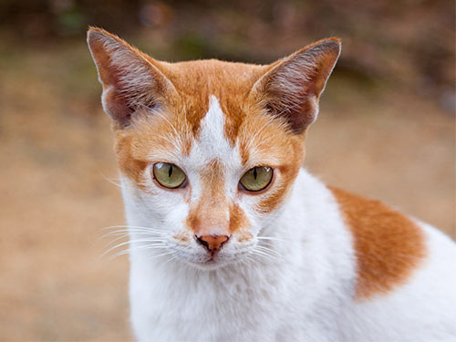
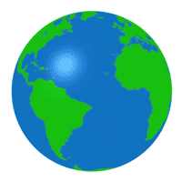
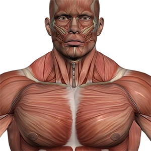

Изображения
Элемент img
Элемент img внедряет изображение в текущий документ в месте определения элемента. Элемент
img не имеет содержимого — он замещается на ходу изображением, указанным в атрибуте
src.
Задание 1. Вставьте на страницу изображение aquaria.jpg

Альтернативный текст
Атрибут alt предоставляет краткое описание изображения. Он содержит альтернативный текст,
который отображается, если изображение не может быть выведено. Пользовательские агенты должны отображать
альтернативный текст, если они не поддерживают изображения, или сконфигурированы так, чтобы не показывать
изображения (отключен показ изображений).
Задание 2. Вставьте на страницу изображение с ошибочной ссылкой slonn.png

Размеры изображения
Атрибуты width и height задают размеры области изображения. Если оба атрибута не
заданы, размер изображения будет определен после его полной загрузки, после чего размеры области будут
изменены для размещения содержания картинки.
Если задан только один из атрибутов, второй размер будет высчитан в соответствие с пропорциями изображения и
заданным атрибутом.
При указании обоих атрибутов браузер «впишет» изображение в область с указанными размерами.
Задание 3.Вставьте на страницу изображение redcat.jpg с указанием его ширины и высоты.

Для добавления гибких (responsive) изображений (таких, которые отображаются хорошо на устройствах с сильно
отличающимися размерами экрана, разрешением, и другими
характеристиками) используют атрибуты sizes и srcset.
Атрибут sizes задаёт размеры изображения для разных макетов страницы.
Атрибут srcset задаёт путь к графическим файлам с учётом размера изображения и устройств.
Задание 4. Вставьте на страницу изображение mushroom.jpg или
mushroom_portrait.jpg или mushroom_landscape.jpg или
mushroom_retina.jpg в соответствии со следующими
правилами:
- для экранов с шириной менее 576px используйте
mushroom_portrait.jpg; - для экранов с шириной от 576px до 768px используйте
mushroom_landscape.jpg; - для экранов с шириной от 768px до 992px и DPR=2 используйте
mushroom_retina.jpg; - во всех остальных случаях используйте
mushroom.jpg.

Подпись к изображению
Для группирования любых элементов, например, изображений и подписей к ним используется элемент
figure.
Он не должен быть связан непосредственно с основным содержимым документа и при его перемещении в другое
место
смысл текста не должен меняться.
Обычно применяется для иллюстраций, фрагментов кода, схем, графиков, диаграмм и др.
Элемент figcaption содержит описание для элемента figure. Он должен быть первым
или последним элементом в группе.
Задание 5. Вставьте на страницу изображение globus.gif с подписью к нему.

Элемент picture
HTML-элемент picture служит контейнером для одного или более элементов
source и одного элемента img для обеспечения оптимальной версии изображения
для различных размеров экрана. Браузер рассмотрит каждый из дочерних элементов source
и выберет один, соответствующий лучшему совпадению; если совпадений среди элементов source
найдено не будет, то будет выбран файл, указанный атрибутом src элемента img.
Затем выбранное изображение отображается в пространстве, занятом элементом img.
Задание 6. Вставьте на страницу изображение html5-logo в растровом (png) или
векторном (svg) формате в зависимости от поддержки браузером этих форматов.
Оптимизация изображений
Для оптимизации скорости загрузки рекомендуется использовать современные форматы изображений WebP и AVIF (высокое сжатие, поддержка прозрачности) для фото и графики, SVG для иконок и логотипов (вектор). Классические форматы JPEG (фото) и PNG (прозрачность) используют для совместимости со старыми браузерами. Форматы WebP и AVIF также можно использовать для анимированных изображений вместо GIF.
Задание 7. С помощью сервиса FreeConvert
преобразуйте изображение muscle.png в формат WebP и добавить его на страницу. Также
преобразуйте light.gif c помощью сервиса Cloudinary в формат AVIF и добавьте на
страницу.


Вернуться на главную